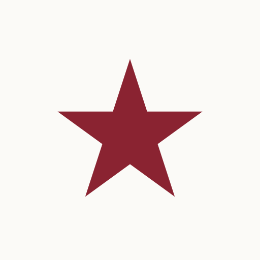

The Direction
A 1965 broadsheet, printed yesterday
The identity formalizes what's already live on americanadvisor.org — the set-type masthead, ink-and-newsprint palette, and serif body were built in the broadsheet register during the bridge-page era, and they fit the newspaper positioning exactly. Everything below comes from print tradition: hairline rules instead of shadows, one working red, type that's read rather than scanned. Structured on BaseLocal's brand-guide template.
Masthead & Logo
The logo is a masthead, not a mark
Libre Caslon Text Bold with a five-pointed star — the only pictorial element in the identity. Canonical presentation (above): dateline, masthead, double rule. On dark backgrounds the star switches to Gilt; Crimson disappears against Ink.

Star icon for favicons and social avatars — Gilt on Ink, or Crimson on Newsprint. These panels render the production SVG files.
Color
Ink on newsprint, one working red
The restraint of a press that stocked two inks. Crimson is the single accent — star, links, kickers, numerals. Gilt appears only on dark surfaces. Contrast measured against Newsprint.
Typography
A paper is read, not scanned
Libre Caslon Text for display, Spectral for body — a deliberate serif-body departure from BaseLocal's Lato, carrying the sit-down-read positioning. Inter appears only in functional furniture. Georgia fallback holds the register in email. Body runs 18px for the oldest-skewing audience in the portfolio.
Email Typography
One fallback, chosen on purpose: Georgia
Gmail and Outlook don't render web fonts from any sender — only Apple Mail does. So email typography is designed on the fallback, not hoping to avoid it: serif type falls to Georgia (a newspaper-genre screen serif, installed on every device), UI furniture falls to Helvetica/Arial. Below, the same story in both tiers — the right panel is real Georgia, exactly what a Gmail reader gets. The masthead itself ships as an image in email, so it renders identically everywhere.
Web + Apple Mail — brand faces
Your Town
Council approves the riverfront plan after a decade of debate
The vote came just before midnight, 6–1, ending a fight that outlasted three mayors. Construction starts in the spring; the farmers market keeps its corner.
Gmail + Outlook — Georgia fallback
Your Town
Council approves the riverfront plan after a decade of debate
The vote came just before midnight, 6–1, ending a fight that outlasted three mayors. Construction starts in the spring; the farmers market keeps its corner.
Email stack: headlines + body Georgia, serif (optionally Spectral/Libre Caslon first, for Apple Mail) · labels + buttons Helvetica, Arial, sans-serif · masthead as PNG.
Newspaper Furniture
The devices that make it ours
What separates this from a generic serif site: double rules, hairlines instead of shadows, crimson index numerals, kickers on every story, drop caps on features, square corners.
Ranked index — crimson numerals
Feature story — kicker, headline, dek, byline row, drop cap, end-mark
Front Page
The morning paper, reborn for the town you actually live in
National headlines down to the community section — the classic hierarchy, delivered before your coffee cools.
For seventy years, the front porch thump of a rolled newspaper meant the day could begin. The habit didn't die because readers stopped caring — the paper stopped arriving. This brand picks the route back up: the big national story first, then your state, then your town, in that order, every morning. ★
Actions & links
Semantic states — one red in the shop
That address is missing its ending — try something like name@example.com.
Photography
Wire-photo sensibility, not stock gloss
Documentary, photojournalistic imagery — real Americans in real places, natural light, muted warm tones that sit on the Newsprint palette. People 50+ appear as capable subjects of the story, never as "elderly" clip art. Every editorial photo takes a cutline: Spectral italic, Slate, with credit. No illustration systems, no 3D renders, no emoji in editorial surfaces.